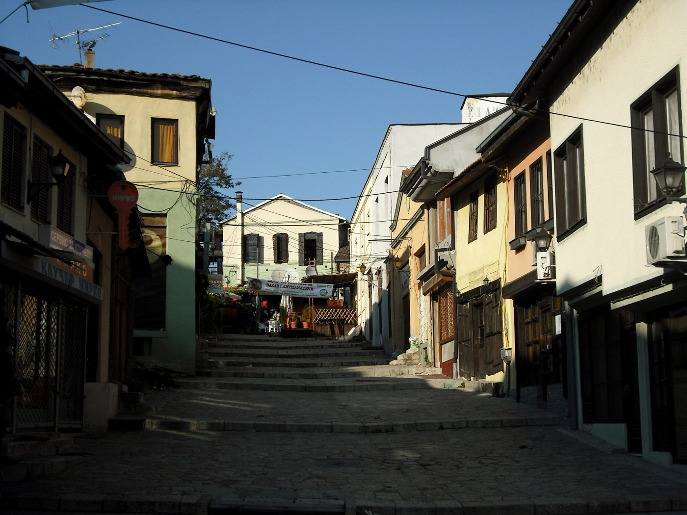
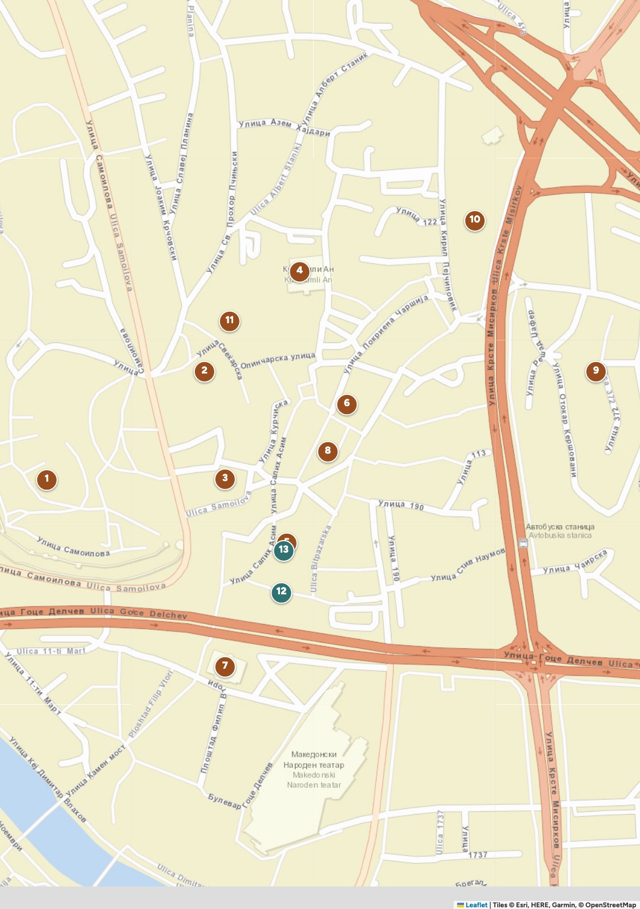
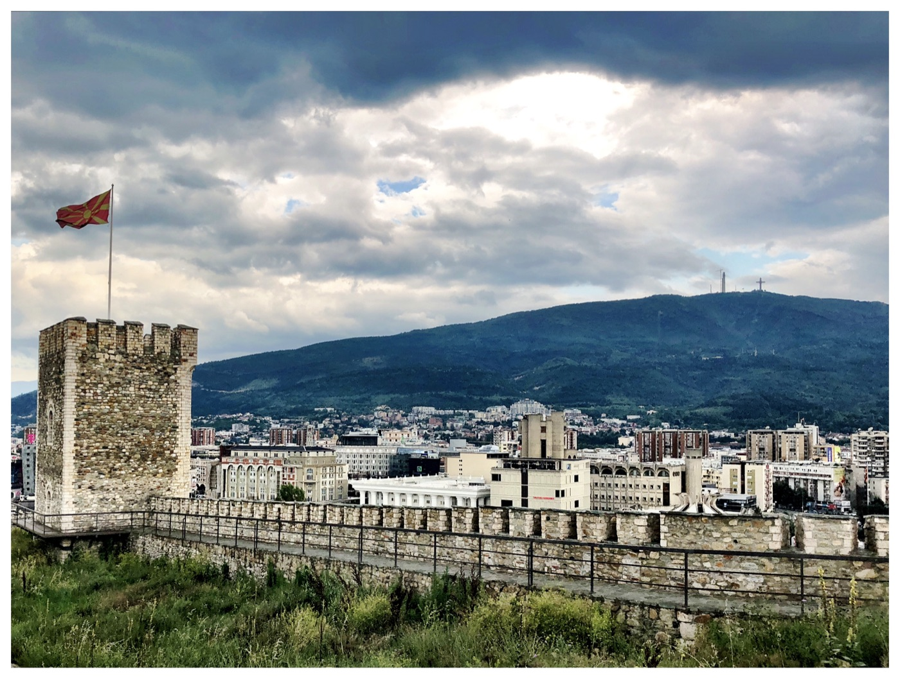
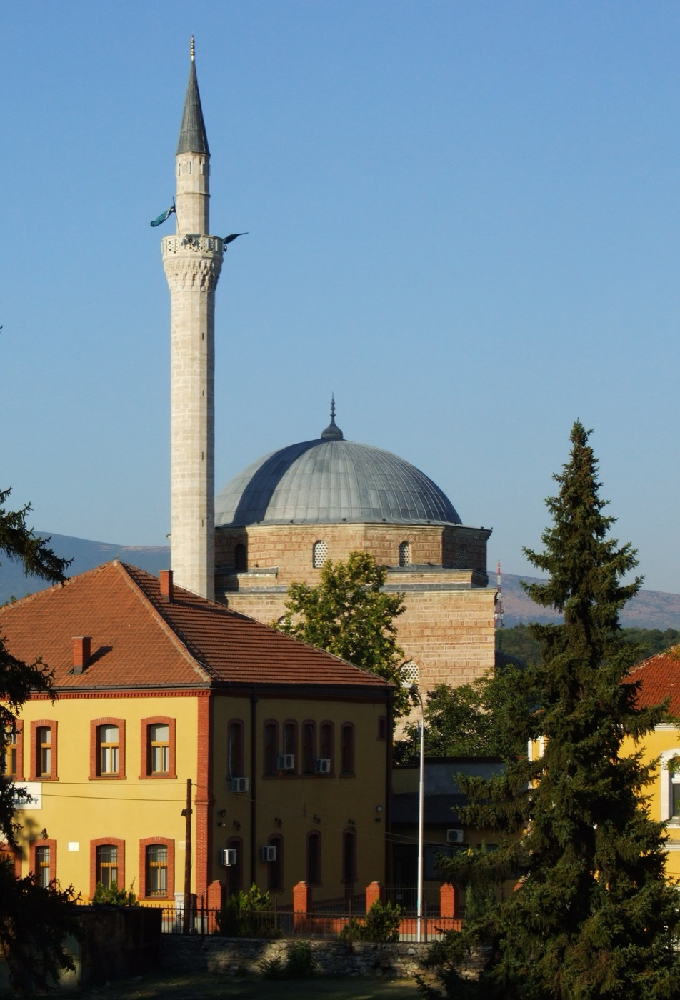
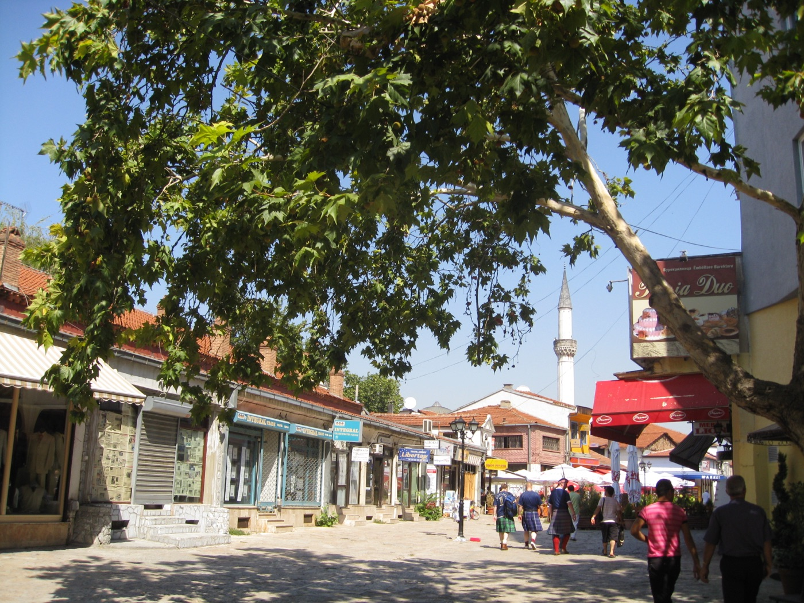
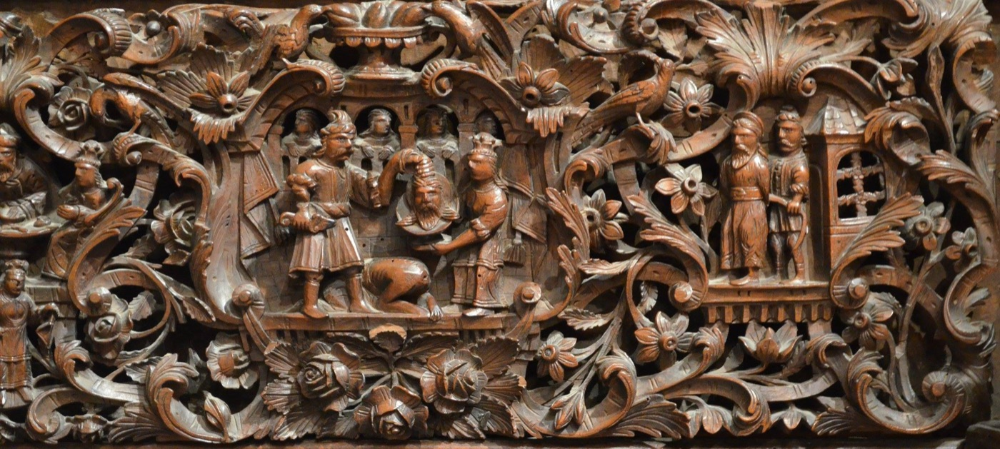
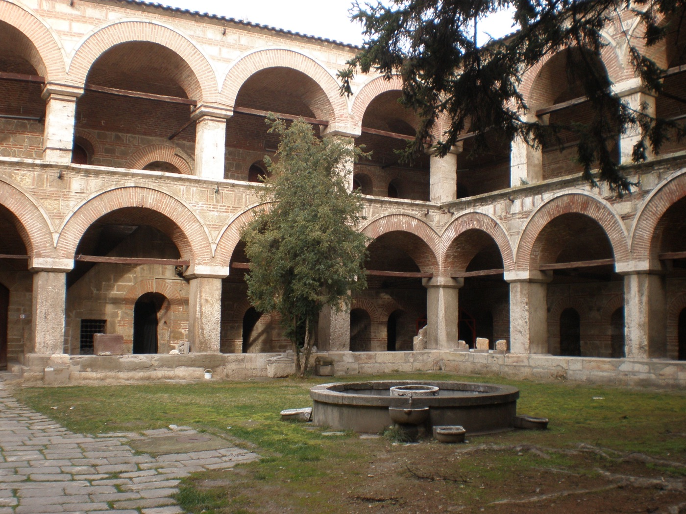
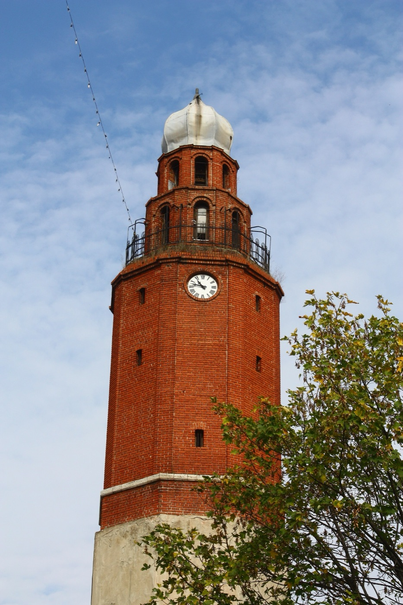
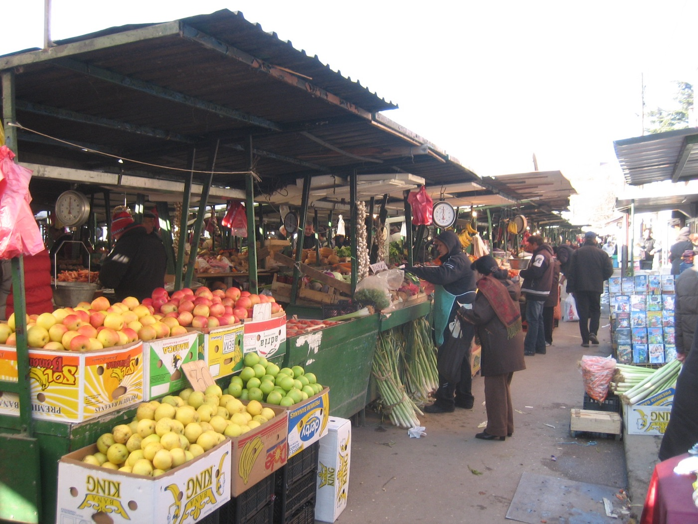
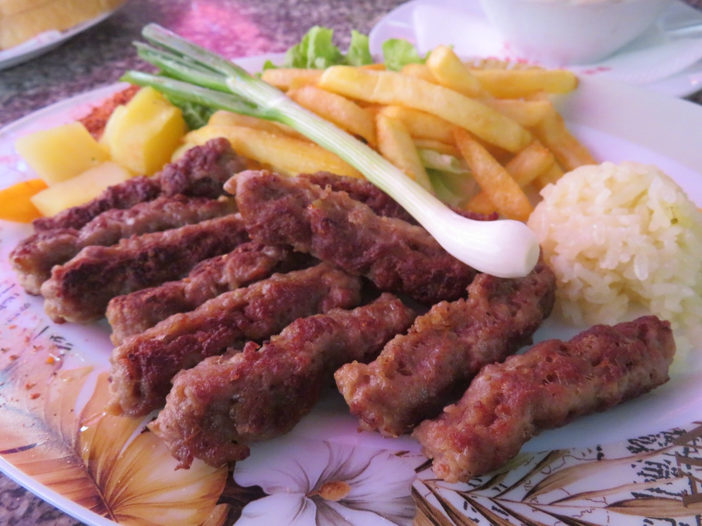

Il più grande bazar ottomano dei Balcani dopo Istanbul: trenta moschee, caravanserragli, hammam e una fortezza del Sesto secolo.
Perché andarci
Si attraversa il Ponte di Pietra e si cambia città. Vicoli stretti in salita, botteghe di un metro e mezzo, odore di carbonella e caffè. Qui si commercia almeno dal Dodicesimo secolo.
Il bazar occupa la riva orientale del Vardar e sale dalla fortezza fino al mercato di Bit Pazar. Dell'epoca ottomana restano una trentina di moschee, diversi an — i caravanserragli dove dormivano i mercanti con i cavalli — e due hammam oggi trasformati in gallerie.
Non è un bazar ricostruito per i turisti: è il posto dove la gente compra ancora le scarpe, l'oro per i matrimoni e le verdure. La parte alta, verso Bit Pazar, è a maggioranza albanese e parla una lingua diversa da quella dall'altra parte del ponte.
Entrate dal Ponte di Pietra e salite senza mappa per la prima mezz'ora: il bazar è piccolo e si gira meglio perdendosi. La mappa serve dopo, per non saltare i tre o quattro posti che contano.

La mappa
Dal Ponte di Pietra il bazar sale verso nord-est. Due assi: la via dei calderai (Kazandžiska), che parte dal ponte, e la salita verso la moschea di Mustafa Pasha e il Kale, sulla sinistra. In fondo, a nord, il mercato di Bit Pazar. Da un capo all'altro sono dieci minuti di cammino.
Top sight · 1

Dalle mura si vede tutta la città e, dietro, il monte Vodno con la croce.
Sta sul punto più alto della città e compare sullo stemma di Skopje insieme al Ponte di Pietra. Si entra gratis, tutti i giorni, e non c'è mai coda.
La prima fortezza fu costruita nel Sesto secolo, probabilmente sotto l'imperatore Giustiniano, in calcare giallo e travertino. Le pietre vennero dalla città romana di Skupi, che un terremoto aveva distrutto nel 518: la stessa cosa che sarebbe successa a Skopje quattordici secoli dopo.
Top sight · 1
Il colle è abitato dal Neolitico, cioè da circa seimila anni. Quello che si cammina oggi è soprattutto bizantino e ottomano, rimaneggiato dopo ogni guerra e ogni terremoto. Le mura sono state risistemate dopo il sisma del 1963 e sono percorribili quasi per intero.
Dal bastione nord si guardano i tetti del bazar, i minareti e, oltre, i palazzoni di Čair. Dal lato sud c'è il Vardar, il centro di marmo e, sul fondo, il monte Vodno con la croce illuminata. È il punto migliore per capire in un colpo solo come è fatta Skopje.
Gli scavi dentro la fortezza hanno portato alla luce strati su strati: neolitico, romano, bizantino, ottomano. Negli anni Duemila i lavori si bloccarono per una polemica politica su cosa ricostruire e cosa no — un piccolo assaggio delle discussioni che qualche anno dopo avrebbero accompagnato Skopje 2014.
La fortezza chiude alle 18, ma alle 16:05 è già buio e non si vede più niente. Salite entro le 15, o perdete la vista che è l'unico motivo per andarci. Le mura sono senza parapetto in più punti: con il ghiaccio, attenzione.
Top sight · 2

Costruita nel 1492, è la moschea più importante di Skopje e una delle poche sopravvissute intatte: nei cinque secoli successivi non le è stato aggiunto nulla.
La volle Çoban Mustafa Pascià, che sarebbe poi diventato visir alla corte del sultano Selim I. Sta su un terrazzo sopra il bazar, con un giardino di rose e la türbe, il mausoleo, dove è sepolta Umi, la figlia del pascià.
Top sight · 2
Sopra il portone c'è una lastra di marmo con un'iscrizione in arabo. Dentro, la sala è quadrata e quasi spoglia, con la grande cupola sopra la testa: architettura di scuola costantinopolitana, costruita vent'anni dopo la caduta di Costantinopoli dagli stessi cantieri imperiali.
Il terremoto del 1963 la danneggiò e fu riparata. Il restauro turco degli anni Duemila ha rimesso a posto il minareto e le decorazioni.

Il terrazzo davanti alla moschea è uno dei posti più tranquilli della città e si affaccia sui tetti del bazar. C'è una fontana per le abluzioni, qualche panchina e le rose. D'inverno è vuoto e vale la pausa di dieci minuti anche solo per il silenzio.
È una moschea in uso, non un museo. Si entra scalzi, si parla piano, non si fotografano le persone che pregano. Se arrivate durante la preghiera, aspettate venti minuti nel giardino: poi si entra senza problemi.
Da vedere
Da fuori è un edificio basso e insignificante, con il pavimento scavato sotto il livello della strada. La spiegazione che si sente sempre è che sotto gli ottomani le chiese non potessero superare in altezza le moschee: è una tradizione molto diffusa, che però non abbiamo trovato confermata da una fonte seria. Dentro c'è la cosa più bella del bazar: una iconostasi in legno intagliato completata nel 1824, dieci metri di viti, uccelli, scene bibliche e figure in abito ottomano. Le icone del trono sono del 1867.

Il caravanserraglio meglio conservato della città: un quadrato di stanze su due piani attorno a un cortile con la fontana. Al piano terra i magazzini e le stalle per cento cavalli, sopra le camere. Le cupole erano rivestite di piombo — kurşun in turco — e da lì il nome. Nell'Ottocento divenne una prigione.

Archeologia, etnografia e storia in un unico complesso che ingloba il caravanserraglio. La sezione etnografica, con i costumi delle valli, è la parte che resta in mente.
Da vedere
Un grande bagno turco del Quattrocento, oggi sede principale della Galleria Nazionale, fondata nel 1948. Sotto le cupole forate, da cui scendono fasci di luce, c'è arte macedone dal Trecento in poi. Vale anche solo per lo spazio.
L'altro bagno turco, "doppio" perché aveva due ali separate per uomini e donne. Ospita mostre temporanee.
Una torre in mattoni di epoca ottomana, fra le più antiche torri dell'orologio dei Balcani. Non si sale, ma è il punto di riferimento per orientarsi nella parte alta del bazar.

Il mercato vero: frutta, verdura, formaggi, peperoni secchi a mazzi, sacchi di fagioli. Niente di turistico, prezzi da quartiere. È qui che si compra l'ajvar buono, quello sfuso in barattolo.

A piedi
Due ore e mezza senza fretta, un chilometro e mezzo, tutto in leggera salita. Da fare di sabato mattina, quando le botteghe sono aperte.
Il bazar è tutto pietra lisciata da secoli di passaggio: con la pioggia diventa una pista di pattinaggio. Scarpe con la suola buona, e in discesa dal Kale prendete la strada asfaltata invece dei gradini.
Mangiare e bere

Ќebapi: si ordinano a cinque o a dieci, con cipolla cruda e pane caldo.
Un solo piatto, fatto da più di cent'anni. Si entra, si dice il numero, arrivano i ќebapi con la cipolla e il pane. In sei si pranza con una quindicina di euro in tutto. Niente prenotazione: si aspetta cinque minuti.
Si cena sotto le volte di un caravanserraglio, con birre locali e piatti tradizionali — tavče gravče, griglia, selsko meso. È il posto giusto per la cena di gruppo nel bazar: per sei, prenotate.
Shopping
Caffettiere da caffè turco (džezve), vassoi, bricchi. Si lavora ancora a martello nella bottega: si sente il rumore prima di vedere il negozio. Un džezve piccolo sta sui 500-800 MKD.
Lavorazione tradizionale macedone a fili sottilissimi. Il prezzo si fa al peso più la fattura: chiedete sempre prima.
Peperoni secchi a mazzi, tè di montagna, paprika, fagioli, ajvar sfuso. Attenzione ai liquidi: ajvar e miele vanno in stiva. Le cose secche no.
Il 26 ottobre 1689 il generale austriaco Piccolomini diede fuoco a Skopje: la città bruciò per due giorni e la popolazione crollò da circa sessantamila a diecimila abitanti. Il bazar perse il suo ruolo di grande piazza commerciale dei Balcani e molti abitanti finirono a Istanbul, in un quartiere che si chiamò Üsküp mahallesi, il quartiere di Skopje. Quello che si cammina oggi è in gran parte ricostruito dopo quell'incendio.
Nelle botteghe di rame e argento si tratta, con calma e senza esagerare: il margine è del dieci o quindici per cento, non della metà. A Bit Pazar e nelle ќebapčilnica i prezzi sono fissi e non si discute.
Crediti fotografici
Foto da Wikimedia Commons, pubblicate con licenze Creative Commons o in pubblico dominio. Mappe: Esri, HERE, Garmin e i contributori di OpenStreetMap. Dati stradali: OpenStreetMap.